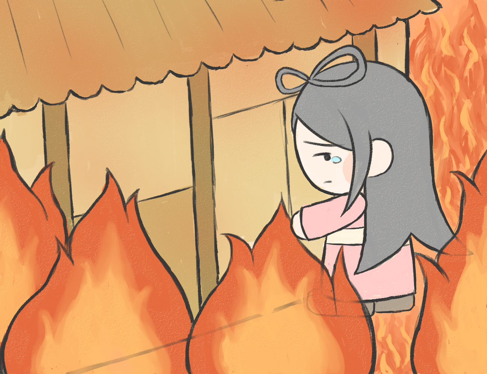

火中出産
国を治めるために高天原からやってきたニニギノミコトは、ある日小川でとても美しい神様のコノハナサクヤヒメに出会います。ニニギノミコトはコノハナノサクヤヒメのあまりの美しさに目を奪われ、すぐにコノハナノサクヤヒメに結婚を申し込みました。
国を治める立派な男性であるニニギノミコトからの求婚にコノハナノサクヤヒメは喜び、二人は夫婦になりました。
夫婦として一晩共に過ごした一夜が明けるとニニギノミコトは国を治めるために反乱部族の討伐へと向かいました。
討伐を終え、やっとの思いで帰ってきたニニギノミコトは、コノハナサクヤヒメから子供ができたことを知らされます。しかし、ニニギノミコトは一夜で身ごもったことを不信に思い、本当に自分の子供なのかを疑いました。

疑われたことに悲しんだコノハナサクヤヒメは、「この赤ちゃんが本当に私たちの子であれば無事に産まれてくるでしょう」と言い、自分の産屋を全て閉しに火をつけました。
燃え盛る炎の中で無事に３人の子供を産み、コノハナノサクヤヒメは身の潔白を証明しました。そして仲直りした二人は子供大切に育てました。